Making industrial
automation tangible.
A company website built around a live 3D factory. Visitors can watch vision, robotics and inspection work together, then get straight to products and contact.
Experience the real thing.
The full interactive factory, running in your browser: the live overview, the seven-station tour and the lighting presets. Best on a laptop or desktop.
Industrial automation is hard to picture from photos and paragraphs, and buyers still need fast access to product facts.
I led research, concept, art direction and UX/UI, and built the site with Claude as my implementation partner.
A live, connected factory on the homepage, with an optional guided tour and the content one scroll away.
A deployed working prototype. Not yet user-tested, so no impact metrics are claimed. A validation plan is ready.
Show how it works, without getting in the way.
Augle AI builds computer vision, inspection and custom AI for manufacturers. Its value is invisible in a product photo.
make industrial automation tangible through an immersive factory, while keeping business information clear and easy to reach?
Immersion vs efficiency
A buyer looking for a spec sheet shouldn't have to sit through a camera journey.
Realism vs performance
Detail that reads well up close costs geometry, shadows and frame rate on ordinary laptops.
Story vs credibility
Robots everywhere can suggest Augle makes robots. It doesn't. The story had to stay on vision and connection.
Designer and creative director, building with AI.
I owned the thinking and every decision. Claude wrote most of the code from my specifications, and I reviewed every pass.
What I owned
- Company and domain research, positioning and copy corrections
- Concept of one connected factory, station sequence and camera intent
- Art direction: light white world, navy type, one blue action colour
- UX of the optional tour: entry, pause, skip, exit and hand-off to content
- UI system, liquid-glass restraint and the lighting idea
- Quality bar: review, testing, and accepting or rejecting every build
How I worked with AI
The skill that mattered most was writing briefs that produce useful iterations: scope, constraints, what must not change, the exact interaction sequence and how to check it.
Research ran through the whole build.
Every iteration raised a new question, from how a welding cell is laid out to how a paint booth is lit. Each answer changed the brief.
What does Augle sell?
Vision inspection (Q100 systems) and custom AI. Not robots.
So IRewrote copy around vision and connection: “Robotics, vision and AI. Connected in one factory.”How does a real line flow?
Each station hands a part to the next. Nothing appears out of thin air.
So IPut every machine on one production clock, with parts appearing only inside enclosures.How do credible brands look?
Robotics and vision leaders keep imagery clean and let one strong visual carry the page.
So IChose a white environment, navy type and a single royal-blue action colour.Video or real-time 3D?
Video can't be paused per station or connected to content. No licensed realistic robot models were available.
So IWent real-time 3D with detailed procedural models.No user research on this project. Audience needs (operations leaders, quality engineers, technical buyers) were working hypotheses. The one assumption I refused to make: that visitors want a 3D tour because it looks impressive.
From one dark robot to a connected white factory.
One robot arm says “robots”. A whole working line says “connected intelligence”. The concept changed three times.
· felt like sci-fi, not a supplier ·
Dramatic, but one robot told the wrong story.
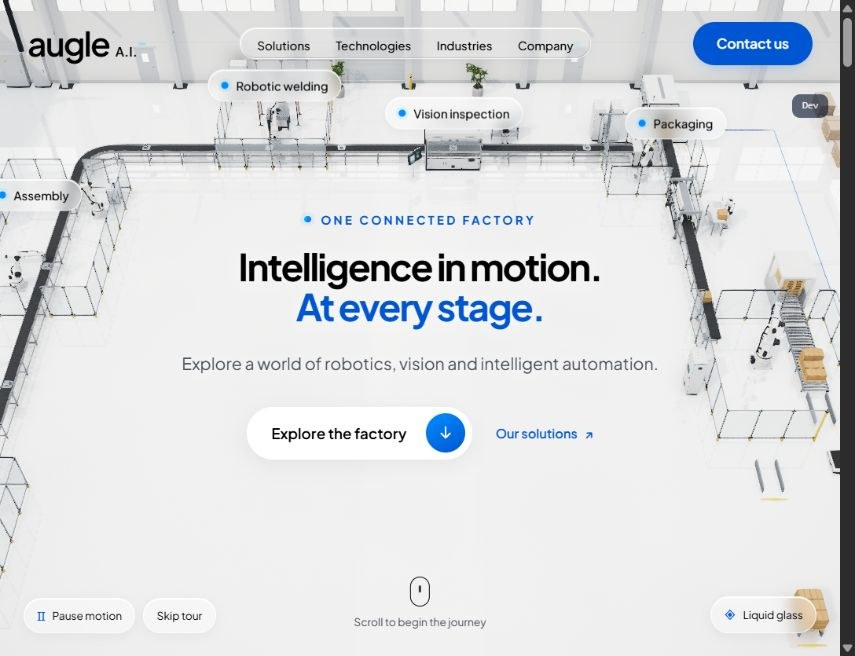
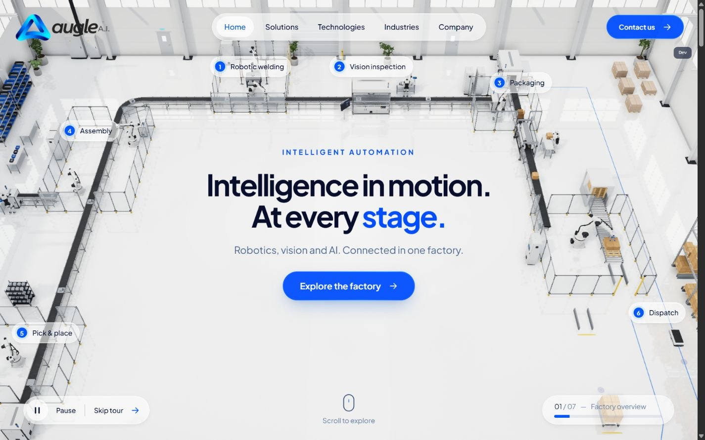
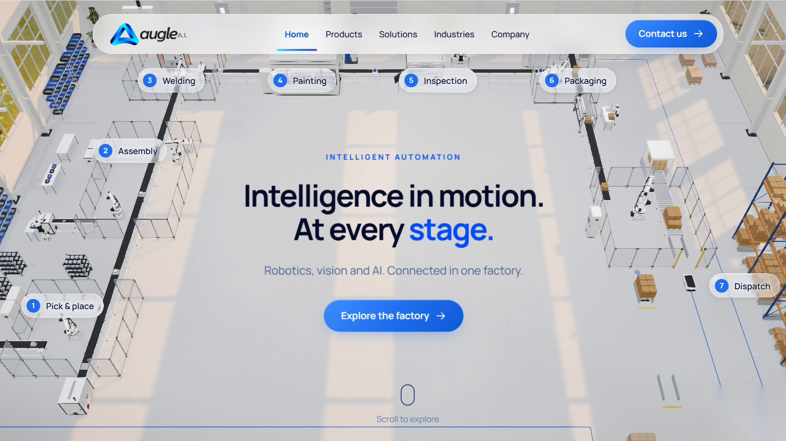
Seven stations, one line, honest motion.
The tour follows one part from start to dispatch. If a weld happens in mid-air, the scene stops communicating and starts distracting.
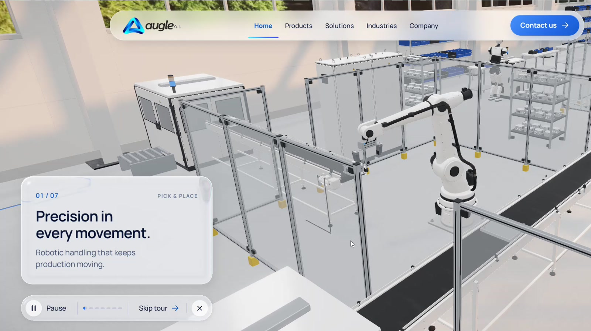
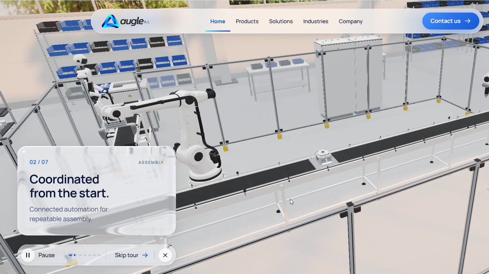
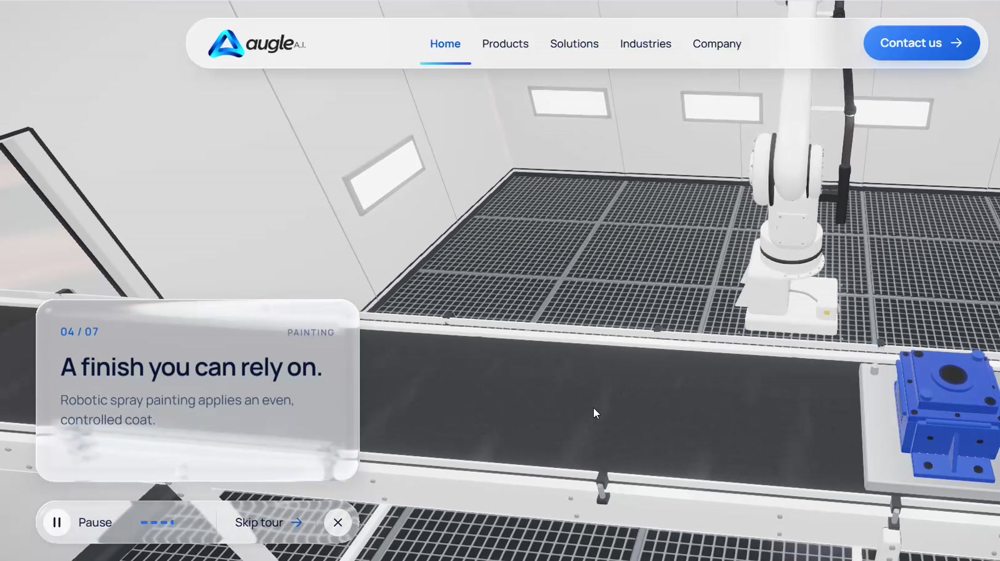
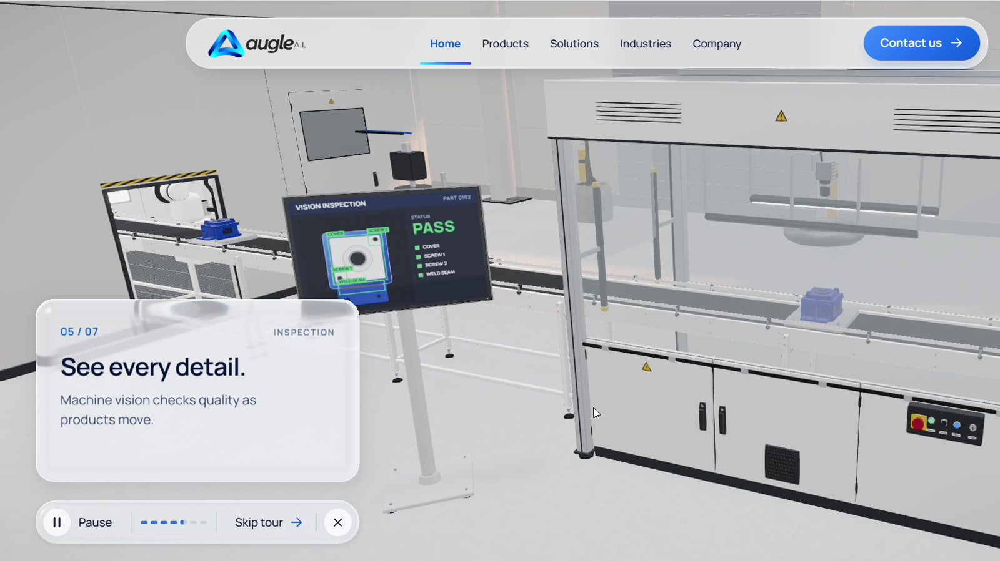
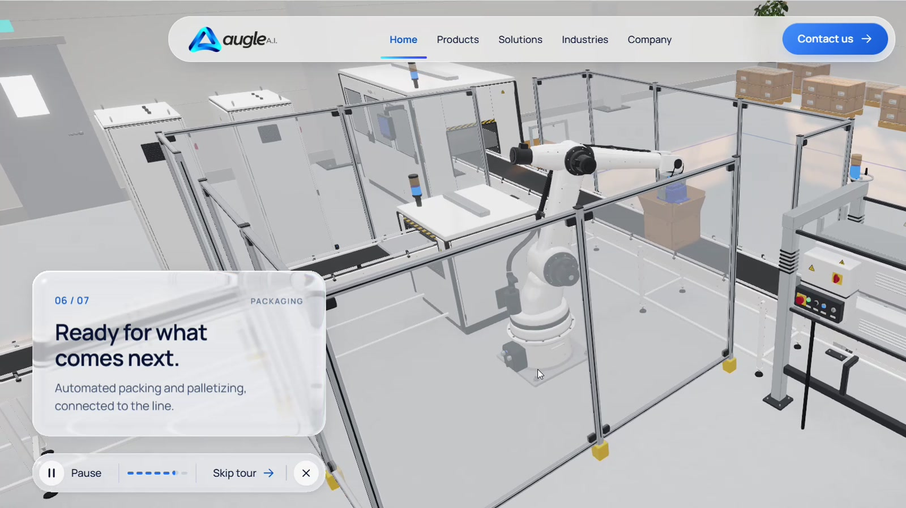
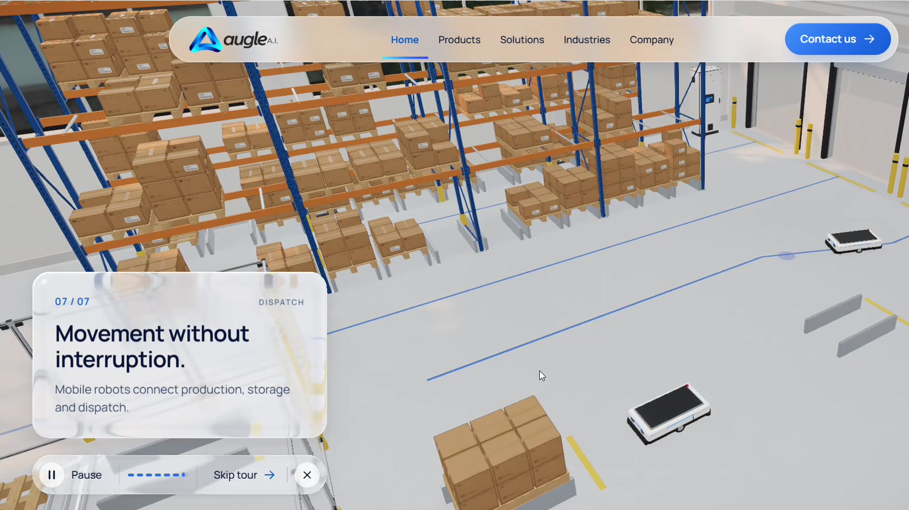
Honest by design. The inspection screen is representative: a scripted scan that always passes. It does not process real production data, and the site never implies it does.
Four decisions that shaped the work.
Each started as a problem I found in review. Here is what I chose, why, and what it cost.
I made the immersive tour optional.
Scroll-driven, the tour was compulsory: stations skipped at speed, cards collided with controls, and there was no way out to the content.
The homepage opens on the live overview. “Explore the factory” starts the tour, with pause and skip always docked. The end card hands off to contact and content.
A technical buyer shouldn't pay for my storytelling with their time.
Fewer visitors may see the full tour.
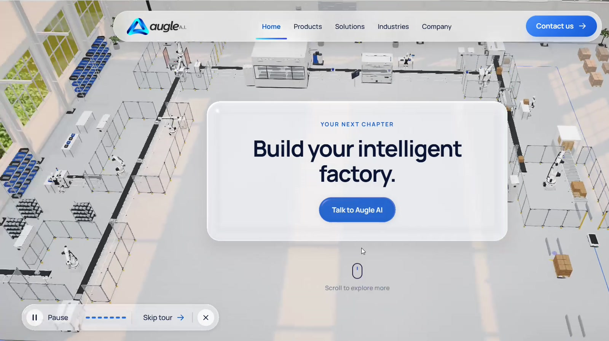
One production clock, independent of scroll.
Scrubbing animation with scroll ran machines in reverse and made parts pop in and out.
A new part enters every 9.5 seconds (set by the welding cell) and every station runs one cycle per beat. Scrolling only moves the camera.
Believable flow is part of the UX. Wrong machinery costs credibility.
A more complex simulation architecture.
Illustrative: each station fits its cycle inside the 9.5 s beat. Welding is the longest, so it sets the pace.
Silhouettes, not shine, made it real.
The factory looked clean but toy-like. Darker shadows and shinier surfaces didn't help.
A realism audit, then six passes on proportions, joints, end effectors, cable dress packs, fasteners and a proper material library.
Realism is a system of geometry, material, light, motion and scale, not one slider.
About 19% more geometry, so performance had to be watched.
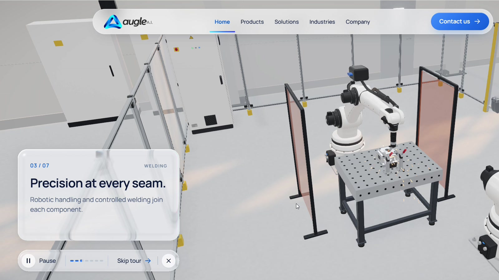
Light that follows the real sun.
Fixed daylight felt static, and early lighting was faint, washed out, and too similar between day and night.
By default the factory is lit by the sun's actual position for the visitor's approximate location. A control previews morning, afternoon, evening and night.
A memorable, place-aware moment that rewards a second visit.
Extra state and checks. The look is art-directed, not physically measured.
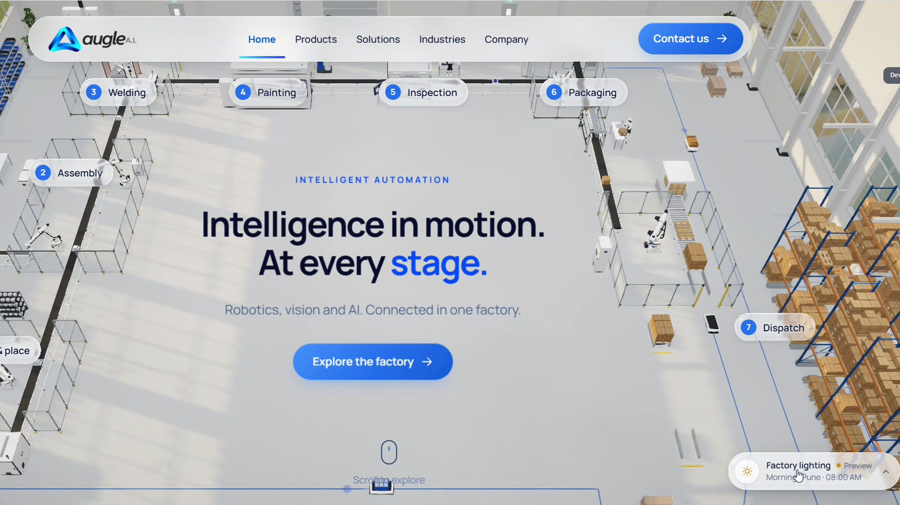
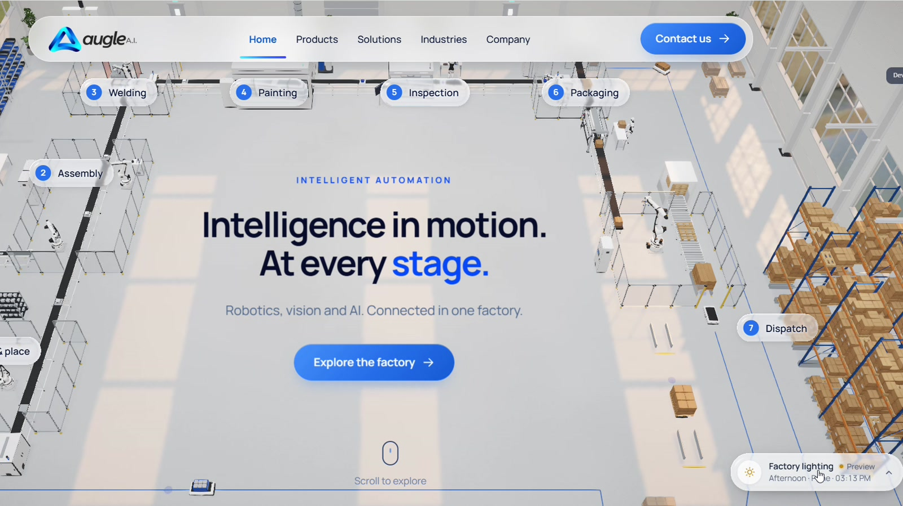
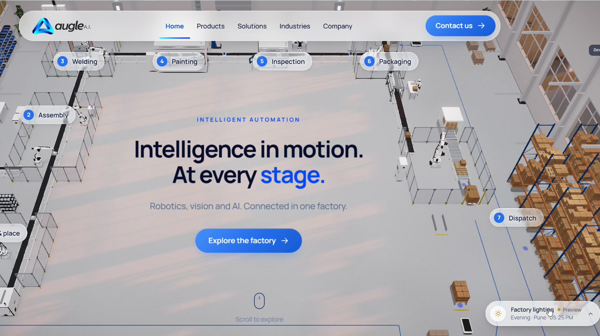
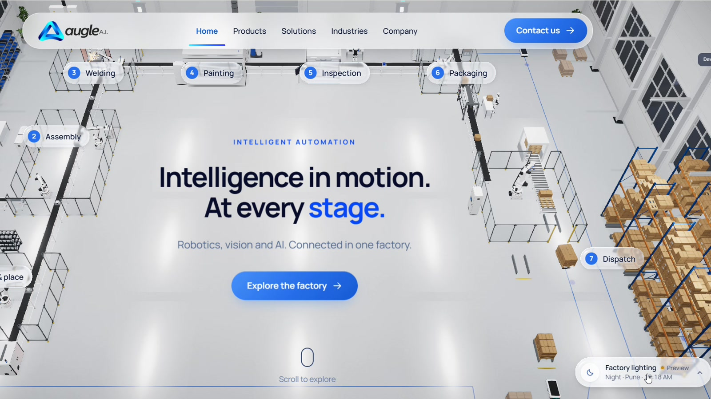
A quiet interface over a busy scene.
The factory is dense, so the interface had to be calm: clear hierarchy, generous whitespace and controls that never collide.
Manrope
One large two-line headline, with the accent word in blue.
8 px rhythm
Hero spacing, card padding and section gaps on one scale.
64 / 44 px
Desktop header and docks at 64 px, mobile targets at 44 px.
One primary
A single filled blue action per view. Everything else stays quiet.
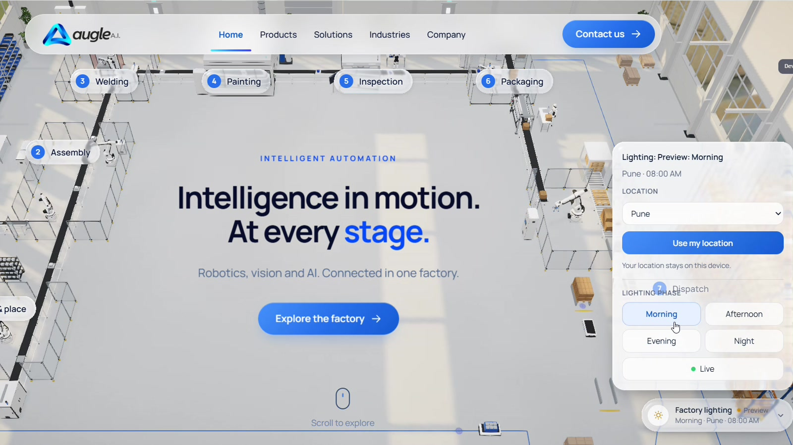
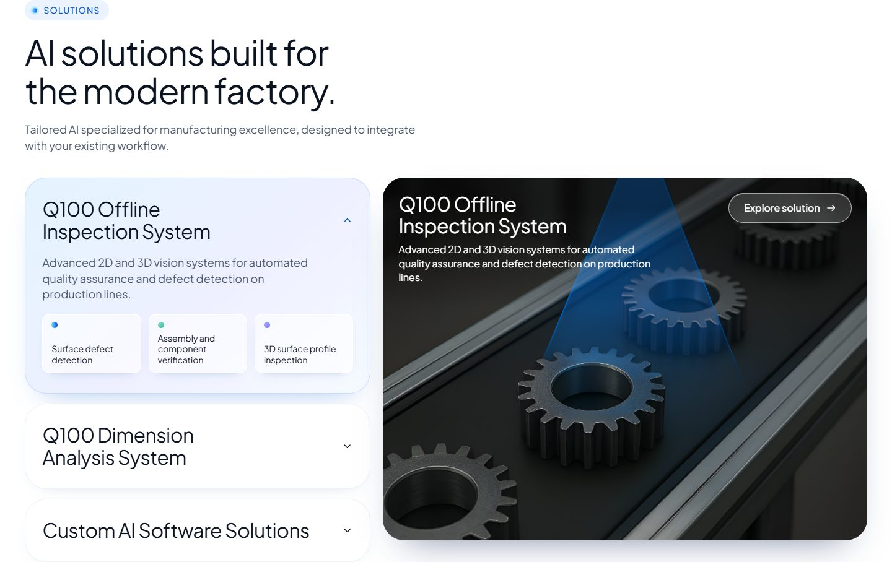
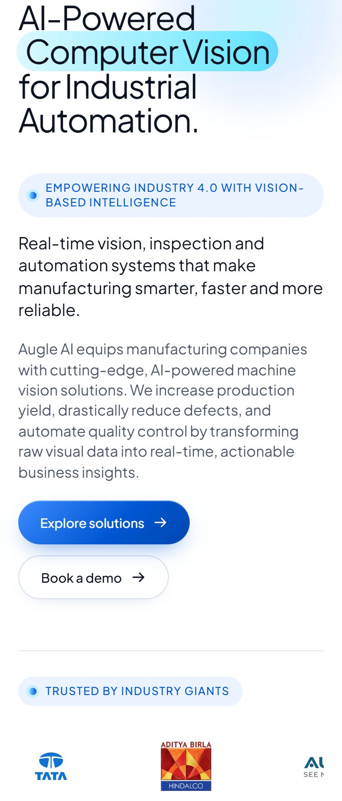
Liquid glass, with restraint
Glass ties the interface to the scene, but only where it helps. Over the 3D scene it is rendered on the GPU from the finished frame, so what sits behind a panel is genuinely refracted, while text stays in the HTML. Iterations removed coloured borders, raised contrast and reduced distortion behind text. Readable edges and a recognisable primary button always came first.
Built to be checked, not just shown.
A clear structure, a deterministic simulation and fallbacks for people and devices that can’t take the full experience.
Separated by concern
- sim/ production logic, robot programs, AMR routes
- world/ and machines/ the factory and moving machines
- scene/ lights, camera rig, GPU glass
- config/ editable colours, timing and copy
Fallbacks built in
- Reduced motion rests the camera and slows machines
- Pause motion and a skip link
- Static poster when WebGL isn't available
- Quality tiers for weaker devices
What was verified
- Type check and production build pass
- Sim checks: spacing, robot reach, weld hand-over, AMR loops
- Layouts at 1440, 800 and 390 px with no overflow
- 72 fps at every station on one test laptop
Who checked it: me, in the browser, plus automated scripts. None of this is a user study, and phones haven't been performance-tested yet.
A working prototype, and a plan to prove it.
The result is deployed for review. Its impact hasn’t been measured yet, so here is exactly what exists and how I’d validate it.
| What exists | Status |
|---|---|
| Live factory overview, 7 stations on one clock | Shipped |
| Optional tour with pause, skip and hand-off to content | Shipped |
| Products, solutions, industries and company sections | Shipped |
| Reduced motion, skip link, WebGL fallback | Shipped |
| Sun-following lighting and four presets | Prototype |
| Working enquiry form and analytics | Planned |
| Validation plan | Success looks like |
|---|---|
| Five-second test | Visitors say “vision and inspection”, not “robot maker” |
| Find a solution | Found without entering the tour |
| Product facts | What Q100 does, found in under a minute |
| Leave the tour halfway | Exit found without help |
| Contact | Enquiry sent without a mail client |
| Phone and keyboard only | All key tasks completable |
What I’d keep, and what I’d change.
Immersion must be optional
Visitors need control over anything immersive, and practical information has to stay one scroll away.
AI needs direction
Precise briefs with constraints and “do not change” lists produced far better iterations than enthusiastic ones.
Users earlier
Everything passed my checks, but none of it has met a real visitor. I’d define success criteria and test key tasks from the start.